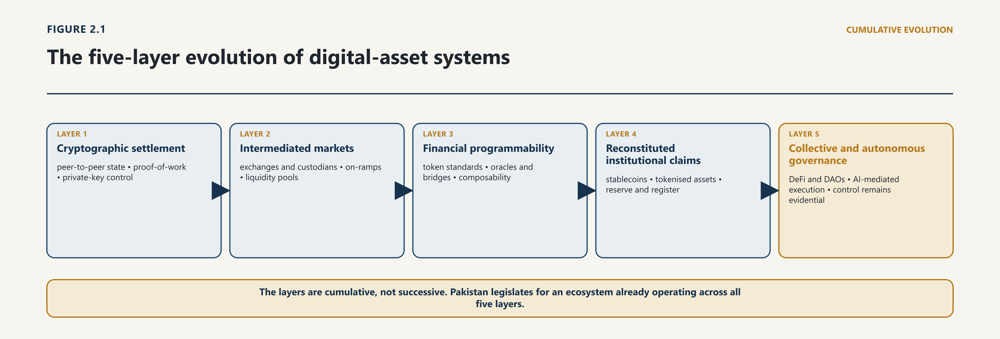

Chapter Two · Part 1
From Electronic Value to the Global Digital-Asset Order
2.1 Electronic Value Before Blockchain
2.1.1 Institution-centred ledgers, payment networks and stored value
1
The digitisation of money, securities and financial records preceded distributed ledgers by more than half a century. Central banks, commercial banks, national payment systems, securities depositories and cross-border messaging networks moved from paper to electronic records over successive decades. In each case the record became digital while institutional authority remained the organising principle. A central bank, clearing house, commercial bank or central securities depository determined the authoritative account state, validated transactions, corrected errors, effected settlement, and answered to judicial attachment.1
2.1.2 Trusted intermediaries and the pre-blockchain allocation of control
2
The legally material distinction, then, is not between physical and digital representation. It is between a record whose authority derives from an identified institution and a record whose authority derives from a consensus procedure. Conventional electronic money and account-based banking represent a personal, actionable claim against an identifiable issuer or intermediary. Their operational integrity and legal finality rest on institutional balance sheets, statutory settlement rules, and established frameworks for reversal of mistake, bankruptcy remoteness, prudential supervision and dispute resolution. On that model the ledger entry is an internal accounting record of an external legal obligation. The entry does not embody value independently of the obligor; it evidences a debt.
3
Pakistan's own statutory architecture reflects precisely this design. The Payment Systems and Electronic Fund Transfers Act 2007 defines electronic money, payment instruments and payment systems by reference to identified institutions and designated systems, and it locates settlement finality in a designated payment system operating under its settlement rules rather than in any property of the record itself.2 Chapter 10 develops the consequences of that structure for the financial perimeter. What matters at this stage is the baseline it establishes: in the inherited order, finality is a legal status conferred by statute on an institutional process, not a technical property of a data structure.
4
This model has not been displaced, and it is important to resist the narrative in which it was. It remains the bedrock of Pakistani and global finance, and it demonstrates that digitisation alone does not disturb legal institutions. What the cryptographic assets described in the following section challenged was never the electronic form of money. It was the assumption that an authoritative record must always rest on an identified institutional balance sheet.
2.2 Distributed Ledgers and the Problem of Shared State
2.2.1 Replication, consensus and fault tolerance
5
A distributed ledger addresses the problem of maintaining a shared state among participants who do not rely on a single institution to write the authoritative record. Replication distributes copies; a consensus protocol determines which proposed state transition the network accepts; cryptographic commitments make alteration detectable; and fault-tolerance assumptions define the failures the system is designed to survive. None of those properties establishes legal ownership or public authority. They define an information and execution architecture.
2.2.2 Permissioned and permissionless architectures
6
Permissioned systems restrict validation or access to identified participants and usually anchor governance in contract or institutional rules. Permissionless systems allow open participation subject to protocol conditions and economic incentives. The distinction is not binary in legal effect: governance keys, client software, infrastructure concentration, stablecoin issuers, bridges and interfaces can reintroduce control even where base-layer validation is widely distributed.3
2.3 Bitcoin: Cryptographic Scarcity and Peer-to-Peer Transfer
2.3.1 The double-spend problem and proof-of-work
7
In October 2008 a paper published under the name Satoshi Nakamoto proposed an electronic-cash system in which a peer-to-peer network, cryptographic proof and a shared transaction history would address double spending without requiring a financial institution between payer and payee.4 The design combined asymmetric public-key cryptography, a broadcast network, proof-of-work consensus and protocol-encoded economic incentives, and it demonstrated that a distributed set of independent validators could maintain an authoritative, chronological and tamper-resistant transaction history without a central administrator.
8
Value in that architecture is represented through unspent transaction outputs native to the network. An address does not hold a balance in the sense in which a deposit account holds a balance; it is associated with a cryptographic key pair, possession of the private half of which permits generation of a signature that validates a state transition, consuming existing outputs and creating new ones. Practical control is therefore exercised through key custody. Chapter 4 develops the technical taxonomy; the point required here is narrower and it is legal. Possession of a private key confers the operational capacity to move a unit. It does not establish that the signer holds lawful title, that the transferor had capacity, that the transaction was free of coercion or mistake, or that an intermediary holding keys on another's behalf owes no fiduciary duty. Cryptographic control is an operational fact. It is not legal title, and the two come apart routinely.
2.3.2 Keys, transaction finality and the separation of network from legal order
9
The second observation concerns what followed the design. Cryptographic scarcity did not eliminate financial intermediaries. It relocated them. Users who did not wish to manage unrecoverable keys, tolerate settlement latency or source liquidity directly from a protocol turned to centralised exchanges, custodial wallet providers, institutional custodians, mining-pool coordinators, fiat on-ramp brokers and analytics firms. The base protocol could remain distributed while access, liquidity and custody became concentrated. Much retail and institutional participation has therefore been mediated, which is why a framework addressed only to the protocol layer misses a large part of the conduct that generates loss.
10
That divergence between architectural claim and operational reality is the single most consequential fact in this chapter, and it recurs at every subsequent layer. It is the reason this treatise tests decentralisation as a question of evidence rather than accepting it as a description.
2.4 Programmable Ledgers and Smart-Contract Platforms
2.4.1 Ethereum and general-purpose execution
11
The launch of Ethereum and subsequent programmable ledgers from 2015 expanded the design space from value transfer to general computation. By embedding a stateful virtual machine within the consensus network, these platforms allowed developers to deploy bytecode that executes conditional state transitions when invoked by signed transactions, with execution results recorded in the same shared state.5
12
The shift was not only from transfer to computation. It also changed how ledger state is organised. In programmable systems, contract state and account balances occupy a shared, mutable environment, and transaction ordering can alter economic outcomes between submission and execution. Comparable sequencing and execution questions also exist in institutional markets, but an administered system identifies the operator and subjects the process to contractual and regulatory rules. Public-ledger architecture may distribute or obscure those roles. The legal question is therefore not whether sequencing exists, but who controls it, what value can be extracted from it, and which person or institution answers when the executed outcome differs from the user’s reasonable expectation.6
13
Programmability also converted discrete assets into an interoperating ecosystem, and standardised interfaces did most of that work. Fungible token standards permitted issuance of units representing utility access, governance participation or synthetic exposure through a common interface for transfer, balance enquiry and third-party approval. Non-fungible standards permitted representation of unique identifiers linked by metadata to digital works, collectibles, in-game items or asserted real-world entitlements. Composable protocol design allowed contracts to call one another, producing decentralised exchanges operating on automated market-making formulas, collateralised lending markets, yield aggregators and cross-chain bridges.7
14
The provenance of those standards deserves a moment's attention, because it explains something about the position states now find themselves in. They were not made by any legislature, regulator or treaty body. They emerged from an open proposal process operated by a technical community, were adopted voluntarily, and became near-universal through network effects rather than command. By the time any legislature addressed digital assets, the form of the asset — what a transfer looks like, what an approval is, how a third party is authorised to spend on another's behalf — had already been standardised globally by private ordering. Pakistan's Act, like every other statute in the field, therefore legislates for categories of instrument it did not design and cannot unilaterally alter. This is not unusual in commercial law; the bill of exchange was merchant practice before it was statute. It is worth stating because it bears on a recurring temptation, addressed in Chapter 8, to draft a licensing perimeter around named product types. Product types in this field are set by a standards process the state does not control, and they change faster than primary legislation.
15
A third development is more corrosive of the sector's own founding claim, and it is the bridge between this section and section 2.7. The immutability of deployed code was, at the outset, presented as the guarantee that made trusted intermediaries unnecessary. In practice, developers found immutability commercially intolerable: a contract that cannot be repaired cannot be fixed after a vulnerability is discovered, and a protocol that cannot be adjusted cannot respond to changing collateral conditions. The response was the upgrade pattern — a stable address that holds no logic, delegating execution to an implementation contract that a controlling key can replace. The user interacts with an unchanged address; the code behind it may be entirely different tomorrow. Immutability was not defeated from outside by regulators. It was abandoned from within, for ordinary operational reasons, by the people who built the systems. What replaced it is an identifiable person holding a key that can alter the terms on which everyone else's position is held. That is a description of an intermediary.8
16
Composability enabled rapid financial engineering, and it introduced dependency structures with no analogue in the institution-centred model. Two are load-bearing for later chapters.
17
The first is the oracle. A contract deployed on a ledger cannot natively observe facts outside that ledger — exchange rates, commodity prices, index levels, the occurrence of real-world events. Conditional financial contracts therefore depend on oracles: third-party mechanisms that import external data on-chain. Where an oracle feed is manipulated, delayed or compromised, the dependent contract executes deterministically on false input, and the resulting liquidations or transfers are technically valid and economically wrong. The failure is not a coding error. It is a defect at the boundary between the computational system and the world it purports to reference.9
18
The second is the bridge. Assets locked on one ledger while wrapped representations are minted on another create concentrated custody and liquidity exposure at the locking point, aggregating value under conditions that combine the concentration of a custodian with the disclosure and supervision of neither. Bridges have accordingly been among the largest single loci of loss in the sector's history.10
2.4.2 Tokens, composability and application-layer governance
19
Both structures share a characteristic that matters legally. Each interposes an identifiable set of persons — feed operators, parameter setters, bridge deployers, key holders — into a system described as requiring no trusted party. The failure modes are therefore not merely technical events. They are events with an obligor, and the question is whether the applicable legal system will identify one.
20
The expression "smart contract" is among the more legally misleading terms in current technical usage, and the misdescription has produced concrete regulatory error in a number of jurisdictions. A smart contract is program code deployed at a ledger address that executes deterministically when invoked. It is not, by virtue of executing, a contract in law.
21
An enforceable agreement under Pakistani law requires offer, acceptance, intention to create legal relations, competent parties, lawful object and consideration, and free consent unvitiated by coercion, undue influence, fraud, misrepresentation or mistake. The Contract Act 1872 supplies those requirements, and the Electronic Transactions Ordinance 2002 supplies the recognition of electronic form, attribution of automated communications and admissibility that permits them to be satisfied electronically rather than on paper.11 Neither instrument makes execution constitutive of validity. An automated interaction on a ledger may therefore be any of several distinct legal things: an automated mechanism performing an underlying natural-language agreement; a hybrid arrangement in which readable terms incorporate on-chain parameters; a transaction governed entirely by interface representations and deployed code; or an unauthorised, mistaken or fraudulent state change with no contractual foundation whatever. Chapter 15 develops that classification and its Pakistani consequences in full; the point required here is that the four possibilities are legally distinguishable and that nothing on the ledger distinguishes them.
22
When technical execution and legal validity diverge, the proposition that ‘code is law’ fails, and it fails in a specific and instructive way. Where a person exploits a vulnerability to drain a liquidity pool, the code permitted the transition and the legal system characterises the conduct as unjust enrichment, conversion, fraud or theft according to the facts. Where a contract executes a liquidation on a manipulated oracle input, the transfer is final on the ledger while the affected party retains claims for breach, restitution or damages against those responsible. In neither case does the state of the ledger determine the state of the parties' rights.
23
The proposition has also been tested empirically, and it has not survived. Where a major exploit has occurred, the observed response has never been acceptance of the code's result as the final allocation of loss. It has been a governance response: coordinated protocol change, negotiated return of funds, freezing at the points where regulated intermediaries touch the assets, bounty arrangements concluded under threat of prosecution, or ordinary litigation against identified developers and exchanges. Each of these is an appeal to something outside the code — to a community's decision, an intermediary's discretion, or a court. The history of the sector's largest failures is therefore not a history of code displacing law. It is a history of participants reaching for governance and legal process at precisely the moment the code produced an outcome they were unwilling to accept.
24
Two further practical points follow, and both bear on chapters later in this treatise.
25
The first concerns jurisdiction, where the industry's own documents contradict its rhetoric. A protocol may be described as ownerless and beyond any forum, but the interface through which almost every user reaches it is operated by a company that publishes terms of service, and those terms routinely specify a governing law, a forum or an arbitration seat, exclude classes of user by geography, and disclaim liability. An arrangement cannot coherently assert that no legal system governs it while simultaneously invoking one to limit its own exposure. Where a Pakistani user contracts through such an interface, the applicable law and forum are questions to be determined on ordinary conflict-of-laws principles, and the answer is often less favourable to the user than the marketing suggested. Chapter 16 develops the cross-border administration problem this creates.
26
The second concerns what a ledger entry is. It is a record of an instruction that was executed. It is not a register of title, and the distinction is not academic. A transaction procured by fraud, executed by a person without authority, or performed under a mistake may be void or voidable in law while remaining on the ledger permanently and irreversibly. The entry and the entitlement are separate things that ordinarily coincide and sometimes do not. A signature likewise establishes that a particular key was used; it does not establish who used it, whether that person had capacity, whether they were authorised by the beneficial owner, or whether the key had been compromised. Every one of those remains a question of evidence to be proved on the facts. Chapter 14 develops the evidential ladder by which an on-chain event is connected to a person, and it is one of the more demanding analyses in this treatise precisely because the connection is so often assumed rather than proved.
27
Nor does technical irreversibility displace judicial authority, and the distinction here is one of jurisdictional form rather than jurisdictional limit. Courts act in personam. A judge cannot rewrite an append-only public ledger, and no remedy in this field should be framed as though a judge could. But the court can compel the person controlling the keys to execute a compensating transfer, restrain dealings by regulated custodians within the jurisdiction, order restitution, attach identified assets and award damages. The apparent gap between immutable record and effective remedy is in most cases a gap between the record and the person, and it closes precisely to the extent that a person can be identified, located and reached. Where it does not close, the reason is almost always practical — the actor is anonymous, offshore, or judgment-proof — rather than a defect in the court's authority. Chapter 17 develops the enforcement architecture; what this chapter establishes is that technical finality is a property of code and has never been an exemption from adjudication.
2.5 Tokenisation and Stable-Value Arrangements
2.5.1 Native tokens, claims on assets and tokenised rights
28
Price volatility prevented unbacked native units from performing as stable units of account or predictable media of exchange. That economic friction produced two developments which, taken together, reversed part of the original architectural premise by reinstating an identified obligor.
29
The origin of the instrument is worth recording, because it explains a good deal about the regulatory difficulty it now presents. Stablecoins did not begin as a monetary innovation. They began as an operational workaround: traders needed to move between venues and hold a dollar-denominated position without repeatedly entering and exiting the banking system, and an exchange-issued token that circulated on the same rails as the assets being traded solved that problem. What was designed to route around correspondent banking has since grown into an instrument carrying cross-border payment volume, and the states now asked to supervise it are asked to bring inside the perimeter something built specifically to sit outside it. That genealogy is why the supervisory questions are so persistently awkward: the instrument's utility to its users has always included the fact that it is not a bank deposit.
30
Stablecoins re-establish an explicit relationship between an on-chain unit and an external reference. They differ fundamentally in legal architecture, and the differences are the whole of the analysis. Fiat-referenced tokens purport to maintain parity with an official currency through reserves of high-quality liquid assets held with custodians; their legal reality rests on the holder's redemption right, the effectiveness of reserve segregation, and the solvency of issuer and reserve holders. Asset-referenced tokens reference a basket of currencies, commodities or securities, and require valuation, custody and rebalancing arrangements of corresponding complexity. Algorithmic designs attempt stability through programmatic mint-and-burn arbitrage and collateralised debt positions without full external reserves, and have proved vulnerable to reflexive collapse when confidence withdraws. The Financial Stability Board's global stablecoin recommendations address these arrangements as a distinct supervisory category, and the Virtual Assets Act 2026 adopts the fiat-referenced and asset-referenced distinction in its definitional and substantive provisions.12 Chapter 10 develops the Pakistani perimeter consequences and Chapter 11 the customer-asset and insolvency consequences.
31
The material point for the evolutionary account is that a stablecoin holder's position is not improved by the token's technical properties. It is determined by whether an enforceable redemption claim exists against a solvent obligor, whether reserves are genuinely segregated from the issuer's estate, and whether those questions are answerable in a forum the holder can reach. Those are the questions the institution-centred model of section 2.2 was built to answer. The stablecoin re-poses them without necessarily re-supplying the answers.
32
Three distinctions do the analytical work, and each has been a site of failure.
33
The first is between an attestation and an audit. A reserve attestation reports agreed-upon procedures performed on balances at a stated instant. It is not an audit opinion on financial statements, it does not test the entity's solvency, and a point-in-time report says nothing about the composition of reserves on the days either side of it. Both are legitimate professional products; they answer different questions, and a supervisory regime that accepts the first while describing the second has not achieved what it announced.
2.5.2 Stablecoins, reserves, redemption and monetary linkage
34
The second is between redemption and redemption at par, on demand, by the holder. A right that exists only for verified direct clients above a minimum size, subject to fees, notice periods and a contractual power to suspend, is a materially different instrument from one redeemable by any holder at face value. Yet both circulate identically on the ledger and to the same secondary holders. The person who acquired the token on a secondary market may have no contractual relationship with the issuer at all, which is to say no claim — the very position the institution-centred model exists to avoid.
35
The third is the bearer problem, and it is the one Pakistani law is least prepared for. A token that is freely transferable, that purports to embody a claim, and that passes without notice to the obligor is functionally approaching a bearer instrument. Legal systems have long regarded bearer instruments as requiring particular formalities and particular controls, for reasons connected to finality of transfer, protection of the true owner and financial integrity. Tokenised claims reproduce the commercial characteristics of bearer paper while satisfying none of its formalities, and they do so at a velocity and a geographic reach that bearer paper never had. Chapter 11 develops the property analysis and Chapter 12 the integrity consequences.
36
Tokenisation applies the same logic to assets rather than currency: fractionalised real property, sovereign and corporate debt, trade receivables, commodities and collective investment interests. The efficiency case is real — continuous trading, fractional participation, automated corporate actions, programmatic settlement — and international work on tokenisation treats it as a serious structural development rather than a novelty.13
37
The legal error that recurs is the conflation of the token with the underlying asset. A token is a record. It does not constitute proprietary ownership of an off-chain asset unless the legal system governing that asset so recognises. A real-estate token does not transfer land title absent compliance with registration and stamp requirements; a tokenised share does not confer membership rights unless the person is entered in the statutory register of members under the Companies Act 2017; a tokenised commodity conveys nothing without a valid warehouse receipt and effective bailment.14 The efficacy of tokenisation therefore depends entirely on the integrity of the legal bridge between the on-chain representation and the legally authoritative off-chain register — and on what happens when the two disagree, which is the question most tokenisation structures answer least well. Chapter 11 develops the property and insolvency analysis; Chapter 13 develops the fiscal consequences.
38
Tokenisation has now been attempted in two distinct waves, and the comparison is instructive because the legal problem did not change between them. The first wave presented tokenised instruments as a new form of public fundraising, largely outside securities distribution rules, and it failed for two reasons: the offerings were in substance securities offerings conducted without the applicable protections, and the legal bridge to the underlying entitlement was in most cases never built at all. The second wave is sponsored by established financial institutions, is conducted inside existing securities and fund regimes, and concerns instruments — money-market fund units, short-dated sovereign debt, trade receivables — whose legal characterisation is settled and whose registers are already electronic. It is a far more serious enterprise. But the bridge question is identical. If the statutory register remains authoritative and the token is a mirror, the ledger has automated a workflow and changed nothing about title. If the token is intended to be the register, then the law governing that asset must say so, and in Pakistan, for most asset classes, it does not. The efficiency gains are real; they are gains in operations, not in property law, unless a legislature makes them so.
39
The question the structures answer least well is what happens on divergence — when the ledger says one thing and the authoritative register says another, following an exploit, an erroneous transfer, a court order, or an issuer's insolvency. A tokenisation structure that has not specified which record prevails, and by what mechanism the other is corrected, has not allocated the risk it created; it has merely deferred the question to the first dispute.
2.6 Decentralised Finance
2.6.1 Exchanges, lending, derivatives, liquidity and bridges
40
Decentralised finance deploys contract protocols on public ledgers to reproduce core financial services — trading, market making, lending, borrowing, asset management and derivatives — without conventional intermediaries. Proponents argue that such protocols are autonomous, permissionless and ownerless, and therefore fall outside a financial perimeter that presupposes an intermediary to regulate.
2.6.2 Decentralisation as a spectrum of actual control
41
International standard-setters have not accepted that argument, and neither does this treatise. The Financial Stability Board's assessment of financial stability risks in decentralised finance and IOSCO's policy recommendations both proceed on the basis that responsible persons can generally be identified and that regulatory outcomes should follow function.15 The reason is empirical rather than doctrinal. Decentralisation in operating protocols is rarely absolute; it is a position on a spectrum, and the position is a question of evidence.
42
Four control surfaces recur throughout the period this chapter covers. The first is administrative and emergency capability: developers or multi-signature signers holding keys that pause the protocol, alter fee structures, upgrade contracts through proxy patterns, change collateral parameters or, in some designs, move user funds. The second is governance concentration: token-weighted voting in which founders, early investors and large holders can determine treasury deployment and strategic direction, whether or not they act in concert. The third is the interface layer: the overwhelming majority of users interact through hosted front ends, domains and applications operated by identifiable entities that control access, implement geographic restrictions and monetise flow, notwithstanding that the underlying contracts sit on a public ledger. The fourth is economic extraction: selection of price feeds, calibration of liquidation thresholds, and capture of value through allocations, appreciation and protocol fees.
43
Two further surfaces have emerged more recently and are not yet reflected in most published analysis. The first is sequencing. As section 2.4 explained, the party that orders transactions can extract value from the users whose transactions they order, and in many arrangements that ordering right is held by a single operator or a small set of them. A protocol may be genuinely open at the contract layer while the economics of participating in it are set by whoever controls the queue. The second is the dependency stack. A lending protocol may be decentralised in its own governance while depending on one oracle network for prices, one bridge for collateral, one stablecoin issuer for its unit of account, one hosting provider for its interface and one remote-procedure-call endpoint for connectivity. Decentralisation measured at a single layer says very little; the question is where the whole stack narrows, and it usually narrows somewhere.
44
These are surfaces of control, not a test. The operative test in this treatise is the seven-point control spectrum developed in Chapter 15, which Chapter 4 also applies to the service taxonomy. This chapter identifies where control has historically concentrated; Chapter 15 states how a Pakistani court or regulator should assess it on evidence, and no shorter list here displaces that analysis.
45
The regulatory response has itself evolved through three identifiable phases, and the sequence is worth stating because Pakistan enters at the third. In the first, decentralised arrangements were treated as outside any perimeter — a technology to be observed rather than supervised. In the second, standard-setters converged on identifying a responsible person: if someone can be found who controls or sufficiently influences the arrangement, the existing perimeter reaches them. In the third, now emerging, the inquiry moves to activity and outcome: what financial function is being performed, what risk does it create, what regulatory outcome must be achieved, and who is in a position to deliver it.16 The trajectory runs consistently away from status and towards function.
46
That trajectory also explains why ‘sufficient decentralisation’ is unstable as a stand-alone legal test. Without a defined time of assessment, decision-maker, evidential standard and legal consequence, the label invites the party benefiting from it to supply the answer. A functional control inquiry is more tractable: who holds administrative keys, sets parameters, operates the interface, selects dependencies, receives fees or can suspend activity? Those facts can be proved, contested and applied to the legal test governing the actual activity.
47
Where identifiable persons design, deploy, maintain, market, profit from or retain material power over a protocol providing financial functions to others, those facts may engage service-provider, promoter, fiduciary or other statutory analysis. None of those statuses follows automatically from a technical role. The applicable provision and the real arrangement control. The practical difficulty for regulation is whether a perimeter drafted around conventional intermediary labels can reach functionally equivalent activity when responsibility is distributed across developers, interfaces, governance participants and service dependencies.
2.7 DAOs and Protocol Governance
2.7.1 Voting, delegation, upgrade keys and treasury control
48
Decentralised autonomous organisations apply contract programmability to collective governance. Token-weighted voting, contract-held treasuries, on-chain proposals and off-chain deliberation are combined in an attempt to substitute distributed decision procedures for corporate boards.
49
A voting mechanism is not, however, a legal personality. Corporate and partnership law asks a small number of unavoidable questions: who owns the treasury; who bears liability when the activity causes harm; who contracts with suppliers; who may sue and be sued; and who is assessed to tax. A governance procedure does not answer them, and the absence of an answer is not neutral. It defaults.
2.7.2 Governance without settled legal form
50
An unincorporated DAO may engage partnership, agency or association rules, but token ownership or voting alone is not dispositive. Under the Partnership Act 1932, the inquiry turns on agreement and the real relationship among the participants, including whether they carry on a business in common with a view to profit.17 Where those elements are established, agency and personal-liability consequences may follow; where they are not, they should not be supplied merely because the arrangement uses collective voting or a shared treasury.
51
Some protocols use legal wrappers—foundation companies, special-purpose vehicles, limited liability companies or limited liability partnerships—to supply identifiable personality, contracting capacity and a liability framework. The effect depends on the wrapper’s governing law and its actual relationship with the protocol. Incorporation also places duties on directors or managers that cannot necessarily be displaced by an anonymous token vote.18 Comparative law-reform work has examined these structures without producing one universal solution. Chapter 15 develops the domestic analysis.
2.8 Adoption, Market Cycles and Institutional Entry
2.8.1 Retail use, remittances, speculation and payment propositions
52
Adoption occurred in overlapping waves rather than a single linear ascent. Retail participation combined ideological experimentation, speculation, payments and cross-border value transfer. Market cycles revealed leverage, custody and information failures as well as persistent demand. The evidential question is not whether activity exists, but which use, actor, volume and risk a particular source can establish.
2.8.2 Custodians, exchanges, funds, banks and tokenised markets
53
Institutional entry changed the architecture of control. Centralised exchanges, professional custodians, investment products, banks, payment firms and tokenisation platforms connected public networks to regulated balance sheets and legal persons. That entry did not simply legitimise the asset class. It created identifiable control points, customer relationships and prudential dependencies that law could supervise.
2.9 Recognition by Courts, Legislatures and Regulators
2.9.1 Property, payment, securities and insolvency questions
54
The global sequence is cumulative rather than successive. Bitcoin established a workable form of peer-to-peer digital scarcity. Exchanges and custodians then made that architecture accessible to users unwilling or unable to interact directly with it. Programmable ledgers expanded the field from transfer to computation; token standards made new instruments interoperable; stablecoins restored an external unit of account; tokenisation connected ledger units to off-chain claims; DeFi composed trading, lending and derivatives; DAOs and autonomous agents extended programmability into governance and discretion. Earlier layers did not disappear when later ones emerged. Their institutions, risks and legal questions accumulated.
55
Use produced recognition before it produced legal settlement. Native tokens were used for transfer and speculation; exchanges created liquidity and price discovery; stablecoins became settlement and collateral instruments within digital-asset markets; programmable platforms supported issuance, finance and collective administration; and established financial institutions began exploring tokenised deposits, securities and funds. Institutional adoption did not mean that every legal question had been resolved. It meant that digital-asset infrastructure could no longer be treated solely as an experimental or marginal technology.19,20
56
Policy developed in stages. Early official responses concentrated on warnings, regulated gateways, consumer exposure and financial integrity. As intermediated markets grew, attention shifted to licensing, custody, market conduct and the treatment of token offerings. Stablecoins brought payment, reserve, redemption and financial-stability questions to the centre. DeFi required authorities to examine functions and control surfaces rather than rely on an asserted absence of intermediaries. International bodies accordingly moved toward activity-based and outcome-based recommendations while preserving the distinction between comparative standards and domestic law.21,22,23
57
Governance evolved alongside regulation. Technical communities governed protocols and standards; private platforms governed access and custody; token holders governed some parameters and treasuries; regulated institutions introduced risk, compliance and operational controls; and public authorities began constructing legal perimeters around activities, issuers, service providers and responsible persons. No single layer displaced the others. The central legal questions remained representation, control, enforceability and failure: what the unit represents, who can alter the system, what rights can be enforced, and who answers when the architecture fails.

The layers are cumulative, not successive. Each identifies a distinct architecture, failure class and legal question; lines and labels, rather than colour alone, carry the relationship.
2.9.2 From warnings and enforcement to licensing and statutory recognition
58
The resulting regulatory field is neither a single “crypto law” nor a choice between prohibition and permission. It is an interaction among monetary law, payments, banking, securities and derivatives regulation, company and property law, financial-integrity rules, consumer protection, insolvency, evidence, taxation and public administration. The technological label identifies the setting; the legal consequence follows from the function, relationship and statutory text.
59
Pakistan therefore legislated in 2026 against a system that had already passed through technical invention, practical use, market emergence, institutional adoption, international standard-setting and multiple phases of policy response. Chapter 3 turns to that domestic history. The later chapters test whether Pakistan’s legal order connects the new virtual-asset framework coherently with the inherited institutions and laws that continue to govern money, capital, property, evidence and public power.24
60
Courts were often required to address digital assets before legislatures supplied a complete taxonomy. Questions of property, injunction, tracing, insolvency and jurisdiction therefore developed through functional reasoning: control, transferability, exclusion and value mattered more than physical form. Legislative and regulatory responses subsequently moved from warnings and enforcement toward licensing, reserve requirements, market-conduct rules and statutory recognition.
61
Recognition remains perimeter-specific. Property treatment does not make an asset legal tender; a payment use does not negate securities law; regulatory licensing does not adjudicate private title; and tax reporting does not confer immunity. The world order is plural because legal consequences arise from several bodies of law at once.25
2.10 Policy, Governance, Law and Regulation
2.10.1 Consumer protection, financial integrity and systemic risk
62
Public policy converged around recurrent objectives: consumer and investor protection, market integrity, financial integrity, cyber and operational resilience, monetary sovereignty and financial stability. Their relationship is not frictionless. A rule that improves traceability may increase data concentration; reserve requirements can reduce run risk while increasing dependence on custodial banking; and strict domestic controls can move activity offshore without removing citizen exposure.
2.10.2 Innovation, sovereignty, inclusion and public capacity
63
Innovation, inclusion and sovereignty are therefore questions of public capacity as well as regulatory intent. A state must know which activities it can supervise, which information it can obtain, how cross-border cooperation operates, and which losses its legal order leaves with users. Technology-neutral drafting is useful only when institutions can still identify the function and control point to which the rule applies.
2.11 The Emerging World Digital-Asset Order
2.11.1 United States influence, European legal ordering and Asian models
64
The emerging order contains no single sovereign centre. The United States shapes markets through dollar liquidity, securities and commodities enforcement, banking policy and institutional investment. The European Union has constructed a comprehensive supranational licensing and market framework. Asian jurisdictions combine prohibition, licensing, payment regulation, financial-centre experimentation and state-supported infrastructure in different proportions.
2.11.2 Global standards, international law and regulatory fragmentation
65
Global standard setters promote functional coverage, financial-integrity controls, data and cooperation; international law addresses state obligations and cross-border public authority; private international law determines jurisdiction, applicable law, recognition and insolvency. These bodies of material are connected but not equivalent. A standard is not domestic law merely because it is influential, and a domestic licence does not settle cross-border legal effect.26
2.12 Handoff to Pakistan
2.12.1 What global evolution explains
66
Global evolution explains why Pakistan confronts more than a choice between permission and prohibition. It must classify functions, allocate authority across existing institutions, protect customers, preserve monetary and financial integrity, and create lawful routes for cross-border activity. It must also distinguish technical finality from legal finality and regulatory recognition from private rights.
2.12.2 What must be answered within Pakistan’s own constitutional and statutory order
67
The questions Pakistan must answer are domestic and constitutional: which institution has power; which instrument has legal force; how inherited monetary, banking, securities, tax, criminal and digital laws interact; what transition applies to existing participants; and where remedy lies. Chapter 3 reconstructs the sequence through which those questions became part of Pakistan’s positive law.
Chapter 2 Conclusion
68
The digital-asset order did not arrive as a finished legal category. It developed through successive reallocations of trust, execution and market power. That history explains why contemporary law must follow functions and control rather than names. Chapter 3 turns from global development to Pakistan’s own sequence of caution, experimentation and statutory recognition.
Footnotes
- ↑ Committee on Payments and Market Infrastructures and BIS Innovation Hub, Tokenisation in the Context of Money and Other Assets: Concepts and Implications for Central Banks (Bank for International Settlements, October 2024) 3–11; Bank for International Settlements, ‘Blueprint for the future monetary system: improving the old, enabling the new’ in Annual Economic Report 2023 (20 June 2023) ch III, 85–90; Payment Systems and Electronic Fund Transfers Act 2007, s 2 (definitions of “Electronic Fund or Electronic Money”, “Electronic Money Institution”, “Payment Instrument” and “Payment System”) and ss 3, 4, 10–13 and 21. Statutory finality under s 21 depends on a Designated Payment System and its settlement rules; protocol or contractual finality is not treated as identical. Chapter 10 develops the Pakistani perimeter.
- ↑ CPMI and BIS Innovation Hub (n 1); Payment Systems and Electronic Fund Transfers Act 2007 (n 1).
- ↑ Satoshi Nakamoto, ‘Bitcoin: A Peer-to-Peer Electronic Cash System’ (2008); Bank for International Settlements, Distributed Ledger Technology in Payment, Clearing and Settlement: An Analytical Framework (CPMI Papers No 157, 2017), ISBN 978-92-9259-033-8.
- ↑ Satoshi Nakamoto, Bitcoin: A Peer-to-Peer Electronic Cash System (31 October 2008) 1–4. The paper is used for its stated design and the problem it addresses; it is not evidence of subsequent network behaviour or of any legal characterisation.
- ↑ Ethereum Foundation, ‘Introduction to Smart Contracts’; Ethereum Improvement Proposals, ‘ERC-20: Token Standard’ EIP-20 (November 2015); William Entriken and others, ‘ERC-721: Non-Fungible Token Standard’ EIP-721 (January 2018); Loic D Lesavre, Priam C Varin and Dylan J Yaga, Blockchain Networks: Token Design and Management Overview, NISTIR 8301 (National Institute of Standards and Technology 2021) 5–10 DOI: 10.6028/NIST.IR.8301. Chapter 4 supplies the operative taxonomy.
- ↑ Ethereum Foundation and others (n 5).
- ↑ Ethereum Foundation and others (n 5).
- ↑ Ethereum Foundation and others (n 5).
- ↑ Ethereum Foundation, ‘Oracles’; Ethereum Foundation, ‘Bridges’. These are technical-documentation sources establishing architecture and stated failure modes; loss quantification is not asserted from them.
- ↑ Ethereum Foundation, ‘Oracles’ and ‘Bridges’ (n 9).
- ↑ Contract Act 1872, ss 10–23; Electronic Transactions Ordinance 2002, ss 3–15 and sch; Lawrence Lessig, Code: Version 2.0 (Basic Books 2006); Joel R Reidenberg, ‘Lex Informatica: The Formulation of Information Policy Rules through Technology’ (1998) 76 Texas Law Review 553, 553–55. The Pakistani provisions are the domestic starting point; no representation is made that Pakistani appellate authority has decided each scenario discussed. Chapter 15 supplies the full analysis.
- ↑ Financial Stability Board, High-level Recommendations for the Regulation, Supervision and Oversight of Global Stablecoin Arrangements: Final Report (17 July 2023) 3–5 and recommendations 2–9; Virtual Assets Act 2026, Act No XIII of 2026, s 3 (definitions of “Asset-Referenced Token”, “Fiat-Referenced Token”, “High-Quality Liquid Assets” and “Segregated Reserve”) and ss 31–32. FSB recommendations are comparative standards and are not a source of Pakistani obligation absent domestic enactment.
- ↑ International Organization of Securities Commissions, Policy Recommendations for Crypto and Digital Asset Markets: Final Report FR11/23 (November 2023) recommendations 1–7; Companies Act 2017, ss 62, 72, 74 and 118–129, SECP official consolidation updated 18 August 2022; Transfer of Property Act 1882 and Registration Act 1908, as the law governing the underlying immovable asset. Chapters 10 and 12 develop the property, insolvency and fiscal consequences.
- ↑ IOSCO and others (n 13).
- ↑ Financial Stability Board, The Financial Stability Risks of Decentralised Finance (16 February 2023) 8–18; International Organization of Securities Commissions, Final Report with Policy Recommendations for Decentralized Finance (DeFi) FR14/23 (December 2023) 4–8 and 17–23. The responsible-person analysis is comparative regulatory guidance, not a source of Pakistani liability; Chapter 15 applies Pakistan's statutory service and control perimeter independently.
- ↑ Financial Stability Board and IOSCO (n 15).
- ↑ Partnership Act 1932, ss 4–6, 18, 25 and 28; Companies Act 2017, ss 18, 123A, 134 and 204–205; Limited Liability Partnership Act 2017, ss 3–17; Law Commission of England and Wales, Decentralised Autonomous Organisations: A Scoping Paper (Law Com No 414, 2024), especially paras 2.9–2.20 and 3.30–3.45. The Law Commission material is comparative analysis and not Pakistani doctrine. Chapter 15 supplies the domestic characterisation.
- ↑ Partnership Act 1932 and others (n 17).
- ↑ CPMI and BIS Innovation Hub (n 1); Payment Systems and Electronic Fund Transfers Act 2007 (n 1).
- ↑ Financial Stability Board and Virtual Assets Act 2026 (n 12).
- ↑ Financial Stability Board and Virtual Assets Act 2026 (n 12).
- ↑ Financial Stability Board and IOSCO (n 15).
- ↑ Virtual Assets Act 2026, Act No XIII of 2026, Gazette of Pakistan, Extraordinary, Part I, 5 March 2026, long title, preamble and ss 1–5; International Monetary Fund and Financial Stability Board, IMF–FSB Synthesis Paper: Policies for Crypto-Assets (7 September 2023) 1–3 and 16–24. Chapter 3 supplies the Pakistani genealogy and the authenticated instrument record.
- ↑ Virtual Assets Act 2026 and IMF–FSB (n 23).
- ↑ UK Jurisdiction Taskforce, Legal Statement on Cryptoassets and Smart Contracts (2019); Law Commission of England and Wales, Digital Assets: Final Report (Law Com No 412, 2023), ISBN 978-1-5286-4100-5.
- ↑ Financial Stability Board, Global Regulatory Framework for Crypto-asset Activities (17 July 2023); IMF and FSB, Synthesis Paper: Policies for Crypto-assets (7 September 2023).